بصيرة
01نبحث عن الجزء المحجوب في المشهد، ونوضح العلاقة بين نقطة الرؤية والعائق والمنطقة الناتجة.
في التصميم: خطوط مدروسة، وفراغ واضح، ومعلومة تظهر في موضعها.
هوية هندسية واضحة، وصوت مسؤول، وتجربة عربية تُظهر الفكرة وتشرح حدودها.
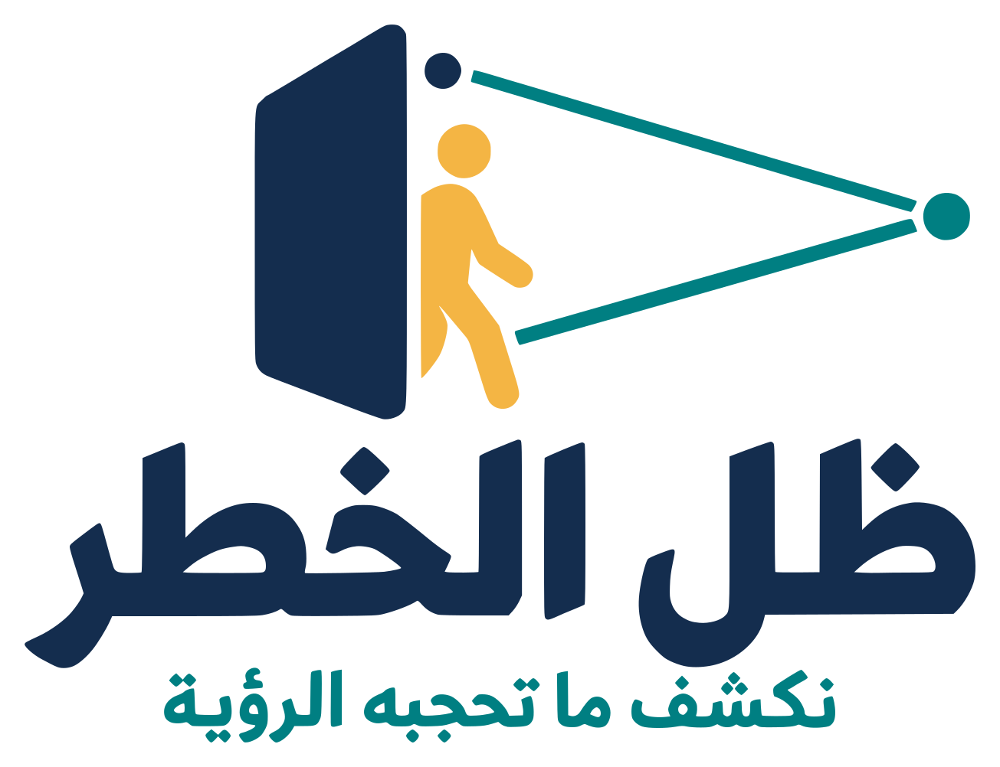
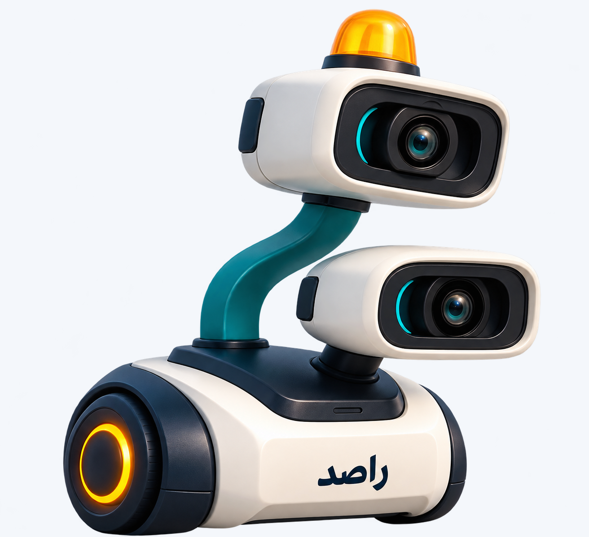
راصد · رفيق الشرح والتعلّم
الشعار القديم هو الأصل المعتمد. تقوم هذه الحزمة على نقله إلى ملفات إنتاج وتنظيم استعماله؛ جميع جولات السكتشات وواجهات الحافلة المقترحة مستبعدة.
الطالبان والمشرف، مصمم العرض والتقرير، مطوّر المنصة، ومنفّذ الطباعة والملصقات.
نماذج التطبيقات مرجع بصري قابل للتعديل عبر ملفات HTML المرفقة؛ لا تمثل منصة متصلة بكاميرات أو بيانات فعلية.
| المجلد | محتواه |
|---|---|
| logo/ | الأصول المتجهة ونسخ PNG الشفافة |
| colors/ | الألوان الدلالية والتباين |
| typography/ | سلّم الخطوط وملفات IBM Plex |
| icons/ | عشر أيقونات للواجهة |
| applications/ | سبعة نماذج تطبيقية ومصادرها |
| brand/ | الاستراتيجية والصوت وخريطة الصفحات |
| mascot/ | راصد بصورته الأصلية |
| source/ و validation/ | مرجع الاعتماد ونتائج الفحص |
«الظل» منطقة حجب هندسية تنشأ خلف عائق بالنسبة إلى نقطة رؤية محددة. و«الخطر» يربط هذه المنطقة بالطفل الذي قد يوجد داخلها.
ظل الخطر مشروع طلابي في السلامة المرورية الذكية، يجمع شرحًا هندسيًا يمكن عرضه على السبورة مع نموذج على الحافلة ومنصة للتجربة والتعلّم.
تجعل الهوية فكرة الحجب قابلة للفهم، وتُظهر دقة العمل وأصالة الفكرة أمام المحكّمين، وتمنح الفريق بيئة يومية منظمة.
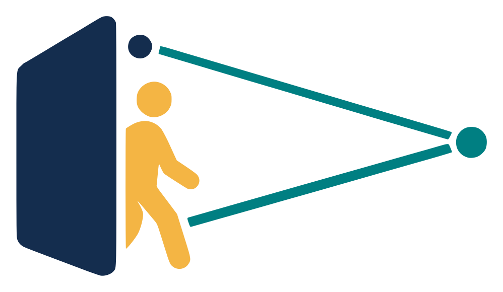
نشرح ما نعرفه، ونعلن ما يتعذر علينا تقييمه، ونربط الإنذار بحالة محددة قابلة للتفسير.
نبحث عن الجزء المحجوب في المشهد، ونوضح العلاقة بين نقطة الرؤية والعائق والمنطقة الناتجة.
في التصميم: خطوط مدروسة، وفراغ واضح، ومعلومة تظهر في موضعها.
لكل نتيجة سبب ووقت وحالة بيانات؛ لا تختلط الملاحظة بالاستنتاج ولا المحاكاة بالرصد الحقيقي.
في التصميم: تسميات ثابتة، وحدات قياس، ومحاذاة ونسب متسقة.
يُقدّم التحذير عند تحقق سببه، وتُعلن عدم الإتاحة عند فقد القدرة على الحكم.
في التصميم: إنذار محدد، ونص مقروء، واستجابة مفهومة.
يحسب، يفسّر، ويضع الدليل قبل المبالغة؛ يتحدث بلغة يستطيع الطالب شرحها بكلماته.
يعامل الطفل والسائق باحترام وهدوء؛ يتجنب التخويف الزائد واللغة الطفولية.
حُفظت كتلة العائق والشخص والخطّان والقرصان، وكذلك الاسم والعبارة السفلية الأصلية.
الملف المتجه مبني على حدود الصورة المرسلة، بثلاثة ألوان صلبة؛ النص العربي فيه مسارات، وليس خطًا حيًا.
الصورة المصدرية نفسها محفوظة في source/approved-logo-original.png. لا تدخل الحافلة المعدّلة أو الشخص الجديد في أي ملف معتمد.
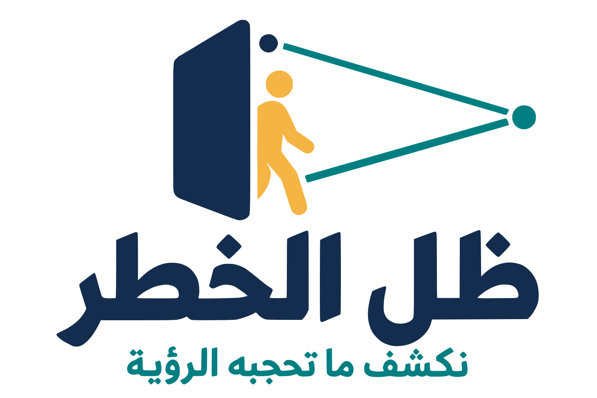
الخط المتقطع توضيحي وليس عنصرًا من العلامة.
يساوي X قطر القرص البترولي الواقع عند الطرف الأيمن من الرمز؛ نحو 62 وحدة في الصورة المصدرية.
اترك مسافة لا تقل عن X من الحد المرئي للشعار إلى أي نص أو صورة أو حافة مساحة. احسبها بعد التحجيم الموحد، لا من مقاس اللوحة وحده.
هوامش ملفات SVG المرفقة لا تغني عن مساحة الأمان في التطبيق. لا تضع وصف الصفحة أو «راصد» داخل الحيّز الواقع بين الخطّين.
للغلاف، وبطاقة المشروع، والمساحات المتوازنة.
logo-vertical-color.svg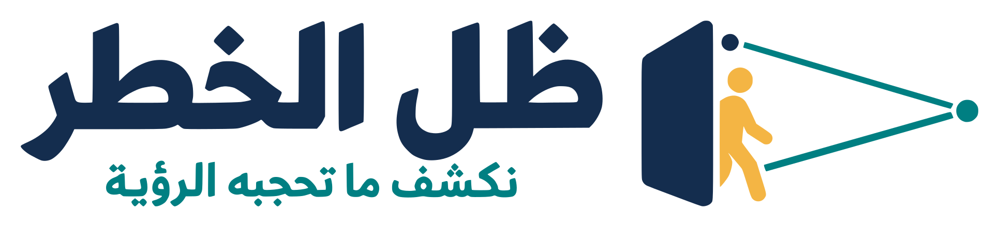
للترويسة والمساحات قليلة الارتفاع؛ الرمز إلى يمين الاسم والعبارة السفلية.
logo-horizontal-color.svg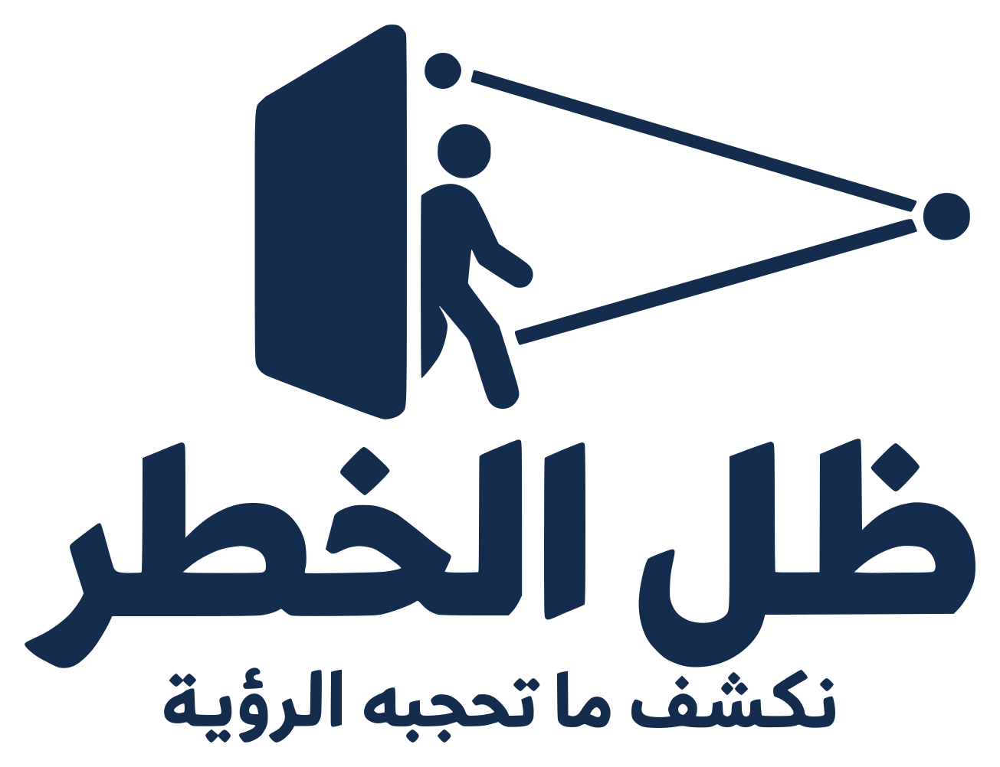
للتقرير المطبوع والملصق والطباعة بحبر واحد.
logo-mono-navy.svg
يوضع على الكحلي؛ ملفه نفسه شفاف.
logo-reversed.svgالمونو والمعكوس صيغ طلبها المالك للإنتاج. تبقى النسخة الملونة الأساسية بألوانها الثلاثة المعتمدة، ولا يُعاد تلوينها بدرجات الواجهة المساعدة.
| الصيغة | عرض البداية | مكافئ تقريبي للطباعة |
|---|---|---|
| القفل العمودي | 240 px | 64 mm |
| القفل الأفقي | 360 px | 96 mm |
| الرمز وحده | 96 px | 26 mm |
| أيقونة التطبيق | 512 × 512 px | ملف رقمي |
| favicon | 16 و32 px | هيئة الرمز فقط |
مقاسات الطباعة مقابلة تقريبية وفق 96 بكسل لكل بوصة، وليست دقة ملف الطباعة. راجع عينة فعلية عند اختلاف خامة الطباعة أو مسافة المشاهدة.
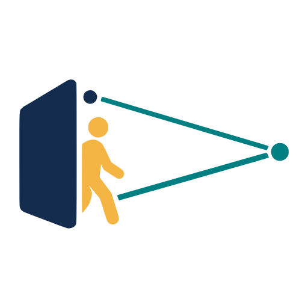
الرمز كامل داخل مساحة التطبيق، دون إطار أيقونة جديد.
لا تغيير في نسبة العرض إلى الارتفاع، ولا اقتطاع للشخص أو الخطّين أو أي جزء من الحروف.
لا استبدال حروف الشعار بخط IBM Plex؛ الخط المعتمد مخصص لنصوص الهوية والواجهة فقط.
لا تحويل الجدار إلى حافلة ولا تبديل هيئة الشخص داخل العلامة المعتمدة.
لا تدرجات أو ظلال أو توهج أو حجم ثلاثي الأبعاد أو حدود إضافية للشعار.
لا أخضر يوحي بأمان الطريق، ولا ألوان واجهة بديلة داخل النسخة الملونة الأصلية.
لا دمج لراصد داخل الشعار، ولا إطار يوحي باعتماد سلامة رسمي أو شعار للجهة المنظمة.
RGB 20 · 45 · 78
الهوية والنص الأساسي
RGB 0 · 127 · 130
الهوية والفعل الرئيسي
RGB 244 · 181 · 68
إبراز ومساحة تحذير؛ ليس لون نص
RGB 244 · 247 · 251
ورق الواجهة ومساحة راصد
تأخذ الخلفية والنص الكحلي المساحة الأكبر. يوجّه البترولي الفعل، ويظهر الكهرماني في موضع يستحق الانتباه.
الأرقام المعتمدة هنا قيم sRGB. تحويل CMYK النهائي مرتبط بملف المطبعة والخامة؛ لا تُعامل قيم تحويل آلي على أنها تطابق مطبعي مضمون.
| الزوج | النص | الخلفية | النسبة |
|---|---|---|---|
| النص الكحلي / الخلفية | #142D4E | #F4F7FB | 12.90:1 |
| رابط الفاتح / الخلفية | #00696C | #F4F7FB | 6.04:1 |
| أبيض / زر بترولي | #FFFFFF | #007F82 | 4.82:1 |
| كحلي / كهرماني | #142D4E | #F4B544 | 7.62:1 |
| نص فاتح / خلفية داكنة | #F4F7FB | #0B1729 | 16.72:1 |
| رابط الداكن / خلفيته | #60CFD0 | #0B1729 | 9.70:1 |
النسب محسوبة من قيم sRGB الفعلية. يعتمد نجاح الفحص على القيمة غير المدوّرة؛ جميع أزواج النص المعتمدة أعلاه تتجاوز 4.5:1.
البترولي الأصلي فوق الخلفية #F4F7FB يحقق نحو 4.485:1؛ لذلك لا يُستخدم كنص واجهة عادي فوقها.
رابط الفاتح يستخدم #00696C، بينما يبقى الزر البترولي مع نص أبيض. درجة الرابط مستقلة عن ألوان الشعار.
مرجع القياس: WCAG 2.2، المعيار 1.4.3؛ النص المعتاد 4.5:1 والنص الكبير 3:1، مع الاستثناء الخاص بالنص داخل الشعارات.
غيّر موضع الطفل وافحص منطقة الحجب.
مساحة الفريقغيّر موضع الطفل وافحص منطقة الحجب.
الخلفية الداكنة #0B1729 والسطح #102138. لا يُقلب الشعار بمرشح CSS؛ يُستعمل الملف المعكوس المرفق. راصد يبقى داخل مساحته الفاتحة الأصلية.
| النمط | الدور | حجم / سطر px | الوزن |
|---|---|---|---|
| display | عنوان الغلاف أو الصفحة الرئيسية فقط | 48 / 64 | 600 |
| h1 | عنوان الصفحة | 36 / 50 | 600 |
| h2 | عنوان قسم رئيسي | 28 / 42 | 600 |
| h3 | عنوان وحدة أو بطاقة محتوى | 22 / 34 | 600 |
| body | النص العربي الأساسي | 18 / 30 | 400 |
| body-sm | الشرح الثانوي ومحتوى الجداول | 16 / 26 | 400 |
| label | الأزرار وتسميات الحقول والتنقل | 16 / 24 | 500 |
| caption | تعليقات الأشكال والمصدر والتوقيت | 14 / 22 | 400 |
خط نظر، وعائق، ومنطقة حجب، ونقطة داخلها.
الأوزان المرفقة: 400 / 500 / 600 / 700؛ الخط يعمل محليًا بعد فك الحزمة.
محاذاة يمين للنص العربي، وتباعد حروف صفري، وسطور لا تطول بلا ضرورة. تفصل الرموز والأزمنة اللاتينية باستخدام dir="ltr" أو bdi.
حروف الشعار الأصلية لا تُستبدل بهذا الخط. مرفق ترخيص OFL مع ملفات الخط من مستودع IBM الرسمي.
buschildcarcameraocclusion-shadowwarning-panelunavailableobservation-freshnesssimulationreportلوحة 24 × 24، سماكة مرجعية 2px ونهايات منسقة. تُستعمل الأيقونة مع تسمية عربية عند احتمال الالتباس.
الأيقونات الموضوعية كالكاميرا والحافلة لا تُعكس تلقائيًا في RTL؛ توجيه مشهد المحاكاة تابع لبيانات المشهد.
راصد يرحّب ويشرح، ويمنح المحتوى التعليمي قربًا إنسانيًا. يبقى الشعار هو المعرّف الرئيسي للمشروع.
غلاف العرض، مقدمة المحتوى التدريبي، صفحة التعريف، بطاقة المعرض، والمنشورات التي تشرح الفكرة.
تظهر حالة الحجب وسبب التحذير ووقت آخر رصد صالح.
وصف لحالة الرؤية الحالية؛ لا تُستبدل بكلمة «آمن».
لا توجد بيانات كافية للحكم؛ تُذكر العلة المتاحة وزمن آخر قراءة صالحة.
رسالة إتمام حفظ، مستقلة دلاليًا عن حالة الطريق أو الأطفال.
واجهة RTL؛ تنقل ثابت ومقروء، وعنوان واحد واضح لكل صفحة، ثم المهمة الأساسية ومعلوماتها المساندة.
راصد يرافق المدخل التعليمي؛ يبقى مخطط التجربة وشرح النتيجة في مقدمة مساحة العمل.
مخطط بنيوي مقترح؛ نماذج الترويسة المرفقة مرجع بصري وليست تطبيقًا عاملًا.
| الصفحة | المحتوى الرئيسي | الفعل الواضح |
|---|---|---|
| الواجهة | الفكرة في مشهد واحد، تعريف موجز، مدخل المختبر، راصد. | ابدأ المحاكاة |
| مساحة الفريق | المهام، التجارب الأخيرة، الملفات، ملاحظات المشرف. | افتح مهمة |
| مختبر المحاكاة | مخطط هندسي، عناصر متحركة، حدود الحجب، الحالة والشرح. | شغّل سيناريو |
| التجارب والتقارير | إعدادات التجربة، ملاحظات، قياسات، مرفقات ومصدر البيانات. | احفظ تجربة |
| المحتوى التدريبي | دروس قصيرة، أمثلة بالمصباح، أسئلة تفسير، راصد. | ابدأ درسًا |
| عرض المحكّمين | المشكلة، الفكرة، المنهج، الدليل، الحدود، ملفات العرض. | افتح العرض |
| الملفات | نسخ الدليل والتقرير والفيديو والأصول المعتمدة. | نزّل ملفًا |
| الإعدادات | اللغة والمظهر وأدوار الفريق وإعدادات البيانات الموثقة. | احفظ الإعدادات |
الخريطة مرفقة أيضًا في brand/platform-page-map-ar.md. لا تتضمن الحزمة ربط كاميرات أو تسجيل دخول أو نشر موقع؛ إنها هوية وتخطيط بصري ومصادر تصميم.
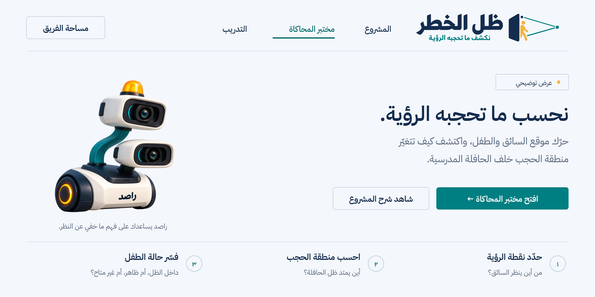
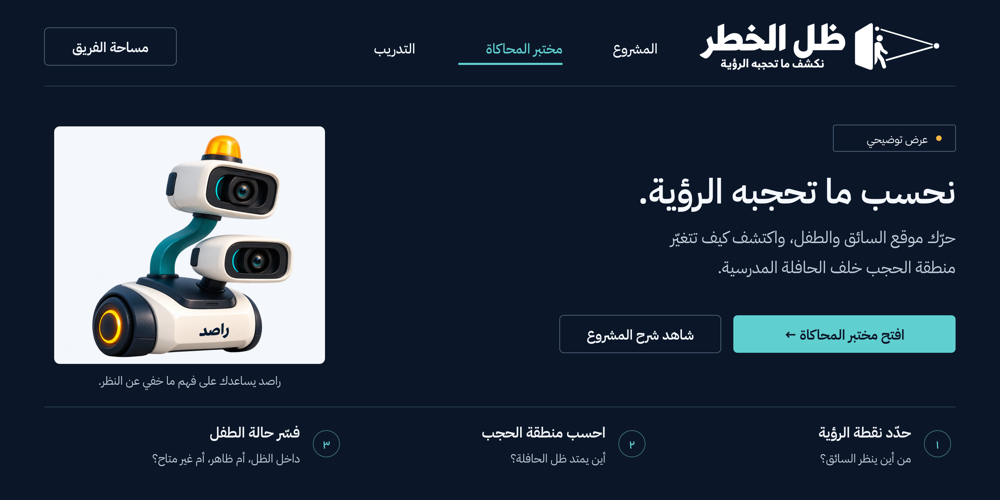
النسختان تتشاركان ترتيب العناصر. كلمة «عرض توضيحي» تميّز النموذج عن أي رصد فعلي.
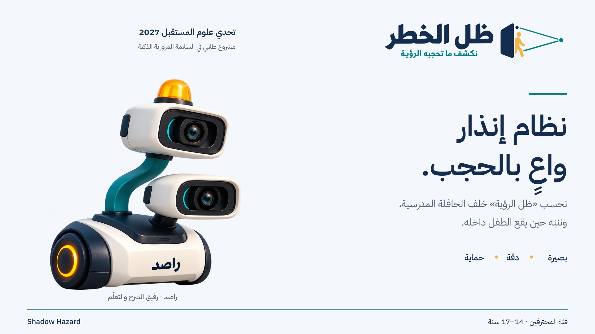
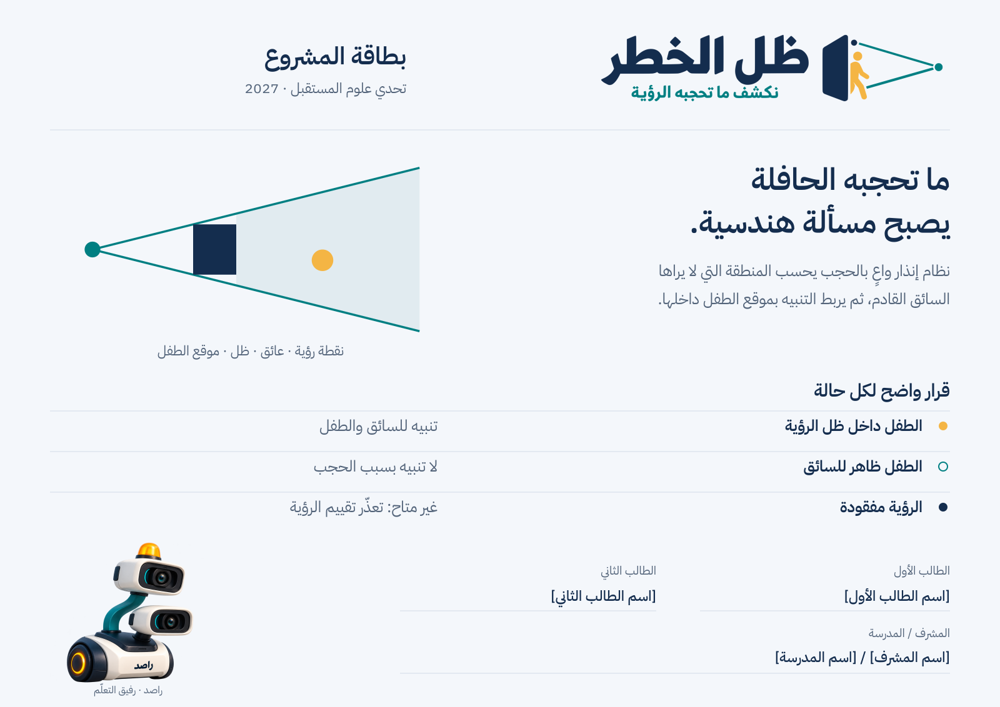
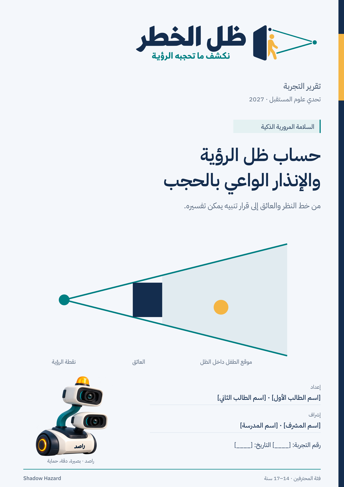
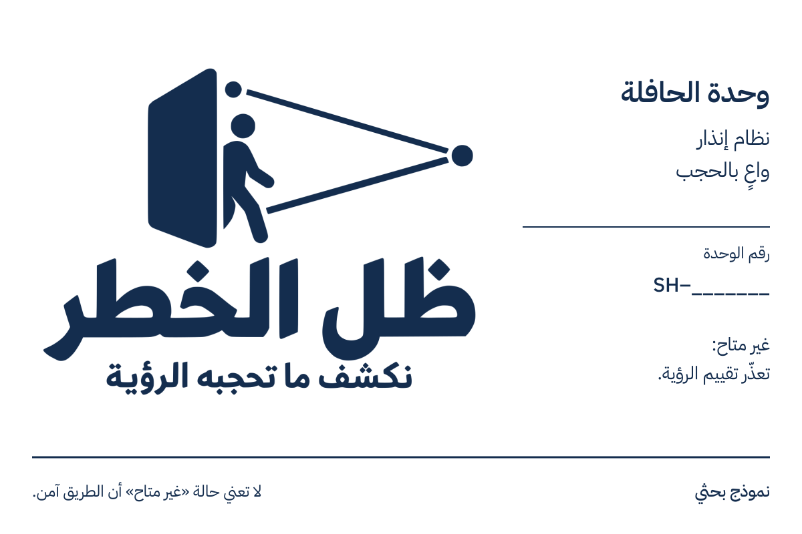
نسخة الملصق للطباعة على مساحة 120 × 80 mm تقريبًا. يراجع منفّذ الطباعة قراءة الحروف على الخامة النهائية.
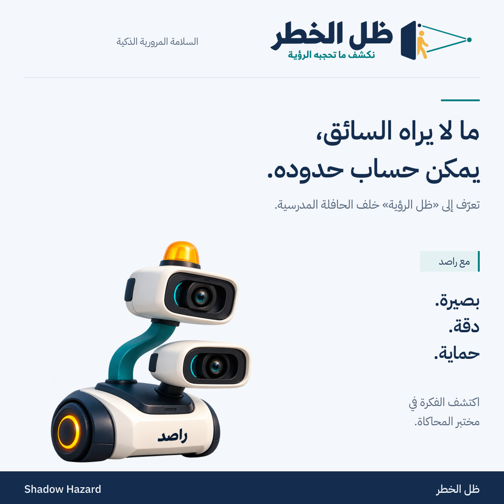
ابدأ من سؤال مفهوم: ماذا تحجب الحافلة عن السائق؟ ثم دع الصورة والشرح يوضحان العلاقة.
الشعار يثبت المصدر، وراصد يدعم التعلم، والكهرماني يوجّه الانتباه. لا تُكدّس التعريف والنتائج والمواعيد في المربع نفسه.
«يتغيّر ما يراه السائق بتغيّر موضعه. في ظل الخطر ندرس منطقة الحجب، ونربط التحذير بوجود الطفل داخلها. جرّب الفكرة في مختبر المحاكاة.»
هذه العبارة هي الموجودة في الأصل المعتمد وتبقى جزءًا من القفل. العبارات التالية مقترحات تحريرية للمحتوى فقط:
لا تستبدل العبارة داخل ملفات الشعار دون قرار مستقل من صاحب العلامة.
| نكتب | نتجنب |
|---|---|
| تعذّر تقييم الرؤية؛ تحقّق من مصدر البيانات. | الطريق آمن لأن النظام لا يعرض تحذيرًا. |
| الطفل داخل منطقة الحجب المحسوبة. | النظام يرى عبر الحافلة. |
| هذه محاكاة توضيحية. | بث حي عندما لا يوجد اتصال فعلي. |
| لم تُسجّل نتائج لهذه التجربة بعد. | نسبة نجاح أو دقة لم تُقَس. |
| ظل الخطر / Shadow Hazard | تهجئات لاتينية أو عربية متغيرة |
نقل حدود صورة نقطية إلى منحنيات يتضمن فروق طفيفة في الحواف. نتائج مقارنة الأقنعة وحدودها موثقة؛ ليست شهادة تطابق مطبعي أو ادعاء جودة بنسبة مئوية.
الشعار القديم وتميمة راصد كما وردا من صاحب المشروع في هذه المحادثة، والموجز وقرار اعتماد الشعار الأصلي.
قيم الألوان ودور راصد من تعليمات المالك. سلّم الخطوط وشبكة التخطيط ونبرة النص اختيارات لهذا المشروع.
1.0
نوفمبر 2026
حزمة أصول وهوية وتطبيقات وتخطيط بصري. بيانات المسابقة الواردة في النماذج مستندة إلى موجز المالك؛ لا تمثل اعتمادًا من الجهة المنظمة.
README.md → فهرس الملفات الكامل